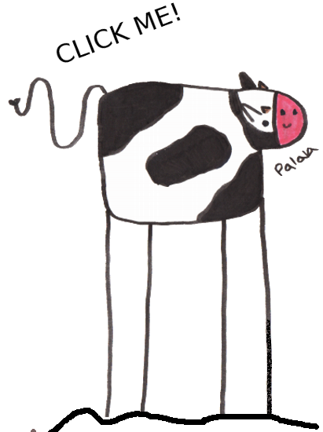
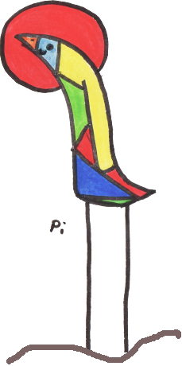

Pi & Palala
Written by Soraya Romero Hernández
Ilustrations by Carla Álvarez García
Self-edited in Bern, 2020


Written by Soraya Romero Hernández
Ilustrations by Carla Álvarez García
Self-edited in Bern, 2020
"Pi & Palala is a story about migration and friendship, that will help our children to dismantle prejudices. This story was inspired by the author's family and their own lives"